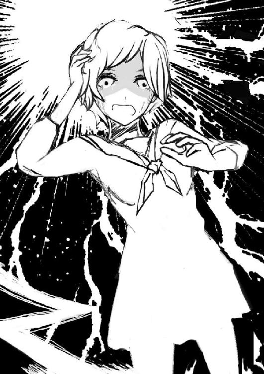
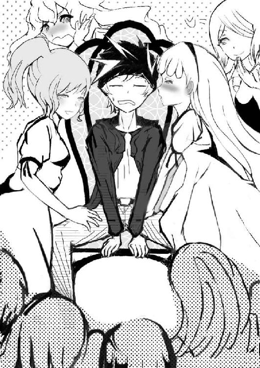
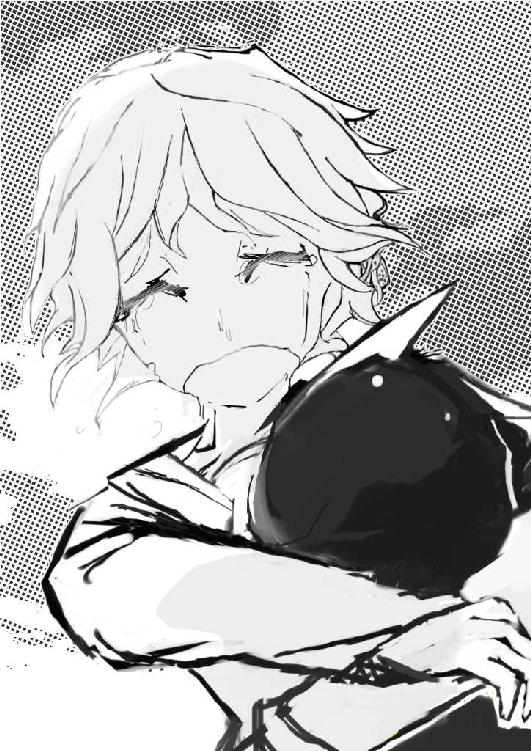

| 隻ヶ淵ゴクトのダーティアンドパーティ | |
| 血能集団ロンパイア | |
| (2017) | |
生まれてから良いことなんて何一つとして無かった――
どうしてこうなってしまったんだろう。
言われてきた事は、ちゃんとゼンブ守ってきたのに。
習い事は一日だって欠かしてない。
社交パーティのドレスだって、恥ずかしがらずに着こなした。
やりたい事をしてるだけの級友たちの誘いだってちゃんと断ってきたよ。
全国でも有数の進学校の受験だって受かったし、成績だって、ずっと一位を維持してた――なのに。
どうして、そんなワタシがイジメられなくちゃいけないの――
「――嘘つき」
言い付けさえ守ってれば、幸せになれるってずっと教わってきた。
だけど、そんなモノどこを探したってないじゃないっ！
言いつけのせいでイジメが起きた。
イジメのせいで言いつけも守れなくなった。
もう、どうやったって幸せになれないなら、いっそ――
――ワタシは、破滅への一歩を踏み出した。
立ち尽くしていた間に、セーラー服から滴り落ちて出来た"水たまり"を踏みにじりながら。
澄み切った星空をかんむりに佇む、深夜の校舎の中に、ワタシは足を踏み入れたのです。
「っ――はっ、はぁ」
「えいっ」
窓を割って校舎の中に足を踏み入れます。
外履きのままだけど知ったことか。
もう二度と、こんな場所に来る必要だって無くなるんだから――
廊下に立って周りを見回す。
赤いランプの下に備えつけられた得物――ワタシは近くの消火器を手にとって、職員室の扉についた小窓から室内に投げ入れます。
消火器は＜生徒禁制＞と書かれた張り紙をも巻き込み、けたたましい音を響かせながらガラスごと職員室の中に放り出されました。
ちょうどテスト期間である事も相まって、中の書類には神経質になってるハズ――これでしばらくは、警備の人の目をここら一帯に向ける事が可能でしょう。
ワタシは踵を返して上の階へと続く階段に片足を乗せます。
でも、もう一歩を踏み出す前に重大な問題に直面しました――
「――あれ、生徒手帳は」
カラダをまさぐっても、ポケットのどこを探しても何も見つからない。
――もしかして、さっき校門を登った時に落としてしまったんでしょうか。
ふと、お母さんの姿が頭に浮かびます。
手帳の中に挿入されたＩＣカードに備わったプリペイド機能の事も。
骨ばっていてもやはり温かい手の平で、そっとワタシの手を取って「大切に使ってね」と言って渡してくれた――入学式の顛末を。
「――ホントに、嘘つきだよ」
大して裕福でもないクセに。
こんなお嬢様学校にワタシを送り出してくれて。
生粋のお嬢様たちの中に溶け込めるように、プリペイドに入金までしてさ――余裕なんかゼンゼンなかったハズなのに、ずっとワタシなんかの為に。
「ぅ――」
頬を伝う温かいモノを無理やり拭う。
泣くな――今さら泣いてどうになる――ワタシは、母さんのネガイを叶えてあげられなかった。
あの人の嘘を押し通してあげる事が、出来なかったんだ――その結果はもう覆らないもの。
そんなワタシに、あの生徒手帳を手にする資格が果たしてあるのでしょうか。
――言いつけに従ってばかりのワタシには、最後まで使う機会なんて訪れなかったけれど。
――イジメに合う度に、何をされても守り抜いてきた品であることだけは確かだったけれど。
こんな、今のワタシに。
「――行かなくちゃ」
さっき、家を出る前に母さんに言ったじゃないか。
たしか「大事な忘れ物をしたから、学園まで戻る」って。
これが最後だけど、最後の嘘くらいは、叶えてあげられそうだよ。
だから――人生の最後を締めくくるその時までは、アナタの娘でいてもいいですか、お母さん。
最後の未練に一礼をしたワタシは、ひたすら階段を駆け上がりました。
もう振り返らずに――いざ目的の扉の前に立っても、急きたてられるようなこの勢いは衰えませんでした。
脇目も振らずにワタシはその場所に駆け込みます。
だというのに、ワタシは一瞬にして体の機能を奪われてしまいました。目の前で鳴った、華やかなクラッカーの音に――
「ようこそ！ 幾月カナエの誕生パーティへ――」
暗がりの室内に電気が一斉に点ります。
ソコはワタシも見慣れていた"理科室"でした。
ですが、ワタシの知っている理科室は、こんなに色とりどりのパーティグッズに彩られていなければ、派手な電飾を散りばめられていません。
――思考が追いつかない。
――同時に、物凄い気分が悪さに思わずえずいてしまいます。
本来は生彩を欠くべき場所がムード満点である違和感もさることながら、呪うような気持ちで踏み入った場所が、お祝いムードに満ちている錯誤感。
これだけならまだしも、さらなる極めつけがありました。
それこそ目の前にいる、初対面のワタシの名前を言い当てた人間の存在。
ここの生徒じゃ有り得ないハズの人物――彼はまだ、ほんの小さな子供だったのです。
彼は少年らしい人懐っこい笑みを浮かべたまま、広々としたテーブルの上で悠々と足をパタパタとさせています。
ニット帽に天然なのかよく分からないとんがりヘアーに黒のロングコート。
――どう見ても中学生には見えない子供が、よくて小学高学年の子が、さも当然のように。
ファントムマスクを思わせる胡散臭い笑みを浮かべたまま、ただニヤニヤとこちらの顔色を伺っています。
「――あれあれ。面白くなかったかな」
開いた口が塞がらないワタシを見た少年は、スベった自分のネタを、照れ隠しに任せて解説するような気さくな態度で、懐から何かを取り出します。
ソレは、ワタシが落としたハズの生徒手帳でした――
一気に総毛立ちます。
生徒手帳を拾われていた事についてじゃない。
大方あの子供は、校門を登っていたワタシを近くから目撃していたのでしょう。
それはいくらなんでも察しがつく――そう。
ワタシが気になっているのは、少年が今、ついでのように洩らした一言についてでした。
思い切って尋ねてみます。
尋ねるしかありませんでした。
そうでもしないと、本当に気が狂ってしまいそうだから――
でも、ワタシが死ぬ気で否定したかったその言葉は、彼の口からポロッとこぼれます。なんの躊躇いもなく――
「えっ――いやほら、無駄になっちゃったなぁと思ってさ。せっかく冊子の地図を見てここまで先回りしたのにサ。カナエお姉ちゃんを笑わせられないなら、意味がないなあって」
手帳についている付録部分を見て先回りしてきた。
だからこの子は、理科室まで辿り着けた。ソレは分かります。だけど――
先回りをしてたって何なのよ。
その後にこんな飾り付けまでして、クラッカーまで持って――
ずっと待機してたって言うのでしょうか。それじゃあ、それじゃあまるで――
まるで最初から、ワタシが何を考えて、ここに来ようとしていた事すらも、全て知ってたみたいじゃないか。

「どう、して、どうして――！」
「だって、お姉ちゃん、今にも死にそうな顔してたし」
首を傾げて、不思議そうな顔をされてしまいます。
そんなモノは理由になっていません。ワタシは思わず、それを口から出してしまいます。
ただ、がなり立てるように、撒くし立てるように――
「それなら、他に可能性あるじゃない！ 自殺しに来たとかっ」
「えー、夜にわざわざ自殺にしにくる人が、自分から濡れ鼠になって来たりしないと思うケド」
――――
「あんな水溜りが出来る汗なんて、フルマラソンでもしない限りそうそう出ないと思うんだよね。ほら今って晴れだし」
――――
「ソレに、こういう時の格好って、普通はジャージとか機能性で選ぶと思うんだ。理科室に辿りつく前に捕まったら本末転倒だもんネ。夜を待ったのに着替える時間が無かったワケじゃないでしょ。わざわざ制服姿になったのは、吸水率の高さが優れてるからじゃない？」
――――
「そこまでして水の保護膜を欲するとか、それも充分に決定打だったけど。やっぱり私立のお嬢様学校は一味違うネ、戒律もバッチリ完備だ――<自殺はダメよ>なんて書かれてる手帳なんかはじめて見たよ。はい、これ返すね。投げるよー、はい投げた」
――――
「まぁ学校はどこも出火箇所としてはだいたい優秀だけど、理科室を選んだ理由については、手ぶらで学校に侵入したお姉ちゃんを見て、すぐに分かったよ。理科室なら特別に何か用意しなくても、着火材も揮発性の高い薬品も完備されてるもんネ。放火魔のお姉ちゃん☆」
――――
「それにしても、制服がスケスケで痣も丸見えだ。こんな事をしてる理由は大方、イジメを苦にしてとかでしょ」
――――
「イジメをやめさせるのは同級生の言いなりだからムリ。自殺なんてもって他だ。ワタシは神様の言いなりだから。もしかして親のいいなりでもあったりするのかな。すっごいねフルコンボ！」
――――
「そうなったら、窓ガラスを割っちゃいましたぁテスト用紙を盗みましたぁ。とかじゃ、キミはきっと助からない。学校の内部で処理されちゃう案件だからネ。お姉ちゃんはどうしても、外部の人間に助けを乞う必要があったんだ。メーデーとなる"狼煙"をあげる必要が。それが、人生に幕を引く行為だとしても」
――――
「どうかなぁ、大体のネタばらしは済んじゃったんだけど――もしかして、面白くなかった......？」
「――アナタは、ワタシをどうしたいの」
しゅんとして露骨に肩を落とす彼を見て、やっと動かせた口から出たのは、やはりタダの問いかけでした。
相手の意に添うための、ワタシが持ち得る唯一無二の処世術。
「えっ――別に。単に笑わせたいだけだけど。人生の最後を迎えようとする人が相手だと、尚更やりがいも出るってモンだよネ」
そういって、彼は心底おかしそうに笑い転げます。
理解できない。
でも、それならそれでいい。今は――
「じゃあ、もう行ってよ。これから火をつけるんだから」
目的を完遂するだけです。
それが、ワタシの唯一の活路だから。
「そうはいかないな。まだ最後のサプライズが残ってるからね――じゃあ、ゲストの方どうぞ！」
少年が手招きしたのと、ワタシがテーブルに組み伏せられたのはほぼ同時でした。
そして、目の焦点があってしまったんです。
紺の制服に身を包んだ巨漢の、血走った目と――
「いやぁ、お姉ちゃんが作った入り口からオイラも侵入したんだけどさ。職員室の近くでその警備員さんと遭遇しちゃって――つまみ出されるのもイヤだし、取引したんだ。これから理科室にくるお姉ちゃんを、好きにしていいよ――ってネ！ 生徒手帳の顔写真を見せたら、すぐ頷いてくれたよ」
――いや。
――やだ！ お願い、助けて！
「やだね。オイラはお姉ちゃんを笑わせに来ただけだもん。じゃあ後は、お二人様でごゆっくり」
――待って！
――待ってっお願い！
「イヤだってば。残念だけどネ。もうサプライズのタネが尽きたんだよね。そんな状態でキミを笑わせても、ソレはオイラの成果じゃない。次の準備が出来たら、また会いに来るよ」
やっぱり、理解できません。
だけど、一つだけ分かった事がありました。
彼の異常性には"定義"がハッキリ定まっている。
このサプライズが終わったモノと勝手に悟って、舞台から降りようとするなら、無理やりにでも引き伸ばしてやればいい――
ワタシは顎で指し示します。
＜学生手帳＞の転がっていた、向こう側を――
「ソコにプリペイドがあるわ。百万円入ってる――好きにしていいから、ワタシを見逃しなさい」
警備員の拘束が緩みます。
ソレはまさに敵の心の揺れでした。しかし、考えが甘かったんです――
そう、今の学校は、人目のない絶海の孤島。
警備員には、ワタシを意のままに弄んだ後、プリペイドを奪うという選択肢も叶う事を失念していました。
ワタシがしたのは、イタズラに情報を与えた単なる悪手。
頼みの綱である彼の姿も見えない以上、ワタシにはもう――選択肢が残されていませんでした。
警備員も腹を決めたのでしょう。
突然、ワタシの上に覆い被さります。――そして次の瞬間には、
泡を吹いて失神していました。なにかを惜しむように股間を押えながら。
「――え？」
「あはは、今のは面白かったよ。お姉ちゃん。オイラのサプライズに乗っかろうなんて人、生まれて初めてだ――はい、笑って笑って」
突然フラッシュが炊かれた事に、ワタシは思わず目を瞑って答えます。
きっと今頃、あのインスタントカメラのネガには、しかめっ面のワタシと、うつ伏せで覆い被さる警備員の後姿が映っている事でしょう。
「明日の朝刊にピッタリのいい構図だネ。見出しのタイトルは＜学校の警備員お嬢様を襲う＞――で、どうかな」
絶望的にセンスがないなこの子。
ワタシがそう告げると、また肩を落としてからかぶりを振ります。
――サプライズ失敗のようでした。そういえば、その事について一つ気になる事があった事を思い出します。
ワタシは乱暴に警備員を押しのけて、彼の前に立ちました、
こうしてみると頭一個分、ワタシの方が背が高い。こんなおねショタねーよ。
いや、そんな事はさておいて、
「もしワタシが、あんたのサプライズ通りにアイツにメチャクチャにされて、それでも笑わなかったら、アナタはどうしたの――」
「モチロン、お姉ちゃんを笑わせるまでつきまとうよ」
――えぇ......。
――じゃあワタシ、これからつきまとわれるんだ。
肉親の言いなり、学友の言いなり。神様の言いなり。
そんで今度はコイツってワケ。自首も失敗したし、もうホントに死のうかな。
どこに流されたって、言いなりをやめる事なんで出来やしないって、ワタシが一番よくわかってた。
あー、なんかムカついてきました。
もういいから笑ってやる。それでこの変人ともおさらばです。
ソレで火事を起こして自首すれば全部予定通り。ソレでいい。それなのに、どうしてワタシは――
「――」
こんな、バカみたいな数の涙しか出すことが出来ないんでしょう。
無性に腹が立ちました。今度は自分に。こんな事をしてまで、目の前の少年に縋ろうとしてるバカな自分に。
ワタシは気付いてしまえば、その小さな手を握り締めていました。
そうしたら、肩を大きく跳ねさせて驚かれてしまいます。いやソレはこっちの反応だから、
「ふ、不純異性交遊は禁止じゃなかったの――カナエお姉ちゃん」
人にあんな事をさせようとしておいて、今さらなに照れてんだコイツ。
ていうか校則を重んじる小学生ってなによ。あぁ、もうどうにでもなって下さい......
ワタシは一度かがんで見せてから、少年の唇に自分の唇を重ねます。伴いの対価を捧げるように。
――きっとコレは、悪魔との契約なのだろう。
――それなら、神様にも楯突いてもコレだけは問うべきだと思う。
「アナタの、アナタの名前を教えて――」
ワタシが訊ねると、少年は待ってましたと云わんばかりのしたり顔を浮かべて、こう言い放ちました――
「隻ヶ淵ゴクト。オイラはなんだってするよ。キミを笑わせるためなら」
夢にまで見た甘い言葉は、
不気味な悪魔の囁きでしかありませんでした。
なのに、なんでかな――まだ涙が止まらないよ。
「――――」
――あぁそっか、そうなんだね。
――だから、ワタシはこんなに泣いてるんだ。嬉しくて。
そうですよね。
ワタシのような人間を笑わせるとなれば、
こんな風に、笑わない理由を突き止めてもらえるだけじゃきっと足りない。間に合わなかった結果がコレなんだから。
彼がこれからしてくれるのは、きっと、
笑わない理由"そのもの"を突き詰めてくれる。そんな密偵行為。
笑顔なのに笑顔に見えない。
有りがちだった、そんなワタシへのイジメの理由も。
思い出す度に、いつもイヤな気持ちになっていたワタシの事すらも、これから気にかけてくれるんだ。
――嬉しい。
――どうしよう、すごい嬉しい。
生まれてから、良いことなんて何も無かった。ハズだったのに。
ヘタクソな笑い方しかできないこんな自分に対して、ワタシは生まれて初めて感謝できたんです――
天職にありつけた――
と、あの日の自分は本気でそう思った。
今年で定年との話を聞くその老衰ゆえか、あるいはここの戒律のせいか。
表情一つ変えやがらねぇ学園長がにじみ出ていた、無言の圧迫感。
そんな面接を乗り越えた末に、ここの内定をもらってやった時には、玄関先で年甲斐もなく小躍りしてしまった程だ。
敷地がやたら広く、細かい区画分けもされていて覚える事は多い上に、当時の自分を思い出す度に穴に入りたくなるデメリットもお土産にもらったが、そんなものはさして問題にならないほどの境遇だろう。ナゼなら――
このガタイの良さと、アイロン底のような分厚いアゴだけが取り柄の自分が、齢三五にしてついに理想郷に至れたのだ――
そう、乙女たちが和気あいあいと暮らす夢の花園に。
みんなちっちゃくて可愛いし。
覗き穴から着替えは覗き放題だし。
調理実習で作った得体の知れない物体を差し入れて感想をせがんでくれるし。
廊下ですれ違うたびに挨拶代わりの舌打ちを欠かさずにしてくれたし、ぶっちゃけ少し嫌われてるのかもしれないと薄々は感じていたけど、それを差し引いても実入りのある数ヶ月である事は、紛れもない事実だった。
そんなお嬢様学校の唯一の男手である警備員として、いつかはお嬢様に跨がりながら腹上死を遂げ殉職するハズだった。
そんな自分は理想は今、ナゼか――男子の踏み台になる事で踏みにじられている。
「あぁもう今度は行き過ぎだよ！ そうそう、ソコらへん。筋がいいねお兄ちゃん」
――そういうセリフは、
――お嬢様たちに言われたかったな。
高所に手を伸ばしたいから。
という一見すると真っ当な理由で、コイツは自分にこの役目を与えたのだが、そんな経緯はこの際どうでもいい。
問題は昨夜の理科室の一件から、絶賛不法侵入中のこのクソガキに、意志諾々と命令されている現状の方なのだから。
遡るは今朝の話だ。
痛んでしまった股間の警棒と、夜通ししていた"証拠隠滅"でガタガタの腰回りを労りつつ、校門あたりを掃除するフリをしながら、登校してきた生徒達を眺め回していた時の事――
そんな至福の日課に勤しんでいた所に、コイツは現れた。
一枚の写真を手に携えて――自分の脳は一瞬にして理解してしまう。
コイツはやはり、子供の皮をかぶった悪魔かナニかに違いない。と――
そう納得する事で、自尊心を守る事にした自分の判断は、ここに来てから一番の仕事ぶりだったに違いない。ナゼなら――
「その掃除が終わったら、どうするんですか。ゴクトくん」
悪魔の要求に従って自分が招き入れた校舎の隅に、捨て置かれている廃屋の中には、我が天使が物憂い顔で座っていたからだ。
幾月カナエ――ここにきた当初から、自分が目を付けていた少女だ。
そんな彼女が、昨夜に引き続き自分の側にいるのだ――けしからん格好で。
奥ゆかしさ満点の名前から連想できる通りの、深窓の令嬢ぜんとした物腰の柔らかさもさることながら。
その所作によって揺らされるセーラー服が、その破壊力を更に高めていた――ハズなのに。
確かにそうだったのに。そんな貞淑だった彼女はどこへやら。
今や、肩口をパカーンと開けたニット地のセーターからは黒いタンクを覗かせ、
ホットパンツとニーソの合間にある白い太ももを、ベルトで締めつけ強調するような、非常にギャル然とした格好をしている。
そんなカナエが魅惑的な女の子座りを披露する隣で、ギャル好みする事で有名なブランドのロゴが刻まれた真新しい紙袋が、恨みがましくこちらを見て抗議している気がするが、お前にはこの気持ちは解るまい。
家出した一人娘がいざ帰宅したら、色々と変貌していた時の父親の絶望が。
独身なのに、何故にこのような気分を味あわないといけないのか。カナエはカナエで、
パパの事なんてもう一切眼中にないのか、先ほどからしきりにあの悪魔に夢中で語りかけてるし。しかし――
あの悪魔によって、自分の天使が堕落するサマは憤慨だが、時々、マイ・エンジェルが思い出したようにこちらを見て、心底、気持ち悪い対象を見下すような蔑視がたまらないから、それでよしとしよう。あの格好もエロカワイイし。
というのもだ。なんか今年度に入ってすぐあたりから、ずっと元気がなくなってたみたいだしな、カナエのやつ。
最近なんかもう目に光がなかったし。少しは改善に向かってるみたいで良かった。
「拠点が出来たら、か――とりあえずはサプライズのネタ集めかな。やるなら、さっさと笑わせたいからね」
自分の上で、ダンボールの埃を叩いてる悪魔が言う。
なにが笑わせる為だ。こいつのやってる事はさっぱり笑えん。
格好こそ影響を受けてはいるが、カナエの本質はまだ、清らかな善性なのだ。
この悪魔によって道を違えてはならない。そうなる前に、自分こそがカナエの救世主として、この悪魔を滅してやらなくてはならないのだ。そうだそうにきまってる――
「そうですね。材料を集め終ったら、笑わせた後に、アイツらを破滅させなくちゃ」
――あっ、
――もうダメかもしれない。
「おーい。右肩がガクッと下がってるよ。お兄ちゃん」
上からそう抗議されてはいるが、うつ伏せと化して床に口付けをしてしまうまで、自分はこの落胆のほどを制御できはしなかった――
可愛いは正義、なんてのはウソっぱちだ。
だってオイラは、相手が可愛いというだけで、何もかもを鵜呑みにしようとはしないし、そもそも対象に対して可愛いと感じる機会があまりない。
最後にそう感じたのは、そうだなぁ、五年生の課外授業で見たタツノオトシゴくらいだネ。それなのに――
そんな可愛げ否定派だったオイラが、身を持って可愛さの強みを知る事になるなんて思わなかったよ。
「やーんかわいー！」
「ねぇねぇ、ゴクト君、次はアタシの膝上にきてよぉ」
「ダメですの。次はわたくしがモフるですの」
――女の子って生き物がよくわからない。
いつかの肝試しで、鮨詰め状態だった寝室に突撃した時は、同級生の女子みんなにタコ殴りにされた経験があるあのオイラがだよ――？
今は引っ張りダコの大恩礼状態なのである。
ソレも、こんなお嬢様学校の食堂の中心で。こんなに多くのお姉ちゃんに、執拗な猫可愛がりを受けているなんてさ。

それだけならまだしもだ――"戒律"の存在を認知しながら、全員が"笑顔"で当然のようにニコニコしている事が、少しばかり不気味に思う。
制服越しに伝わる胸の膨らみに後頭部をうずめながら、オイラがそんな疑問に思いを馳せていると――
「規則正しい事ばかりで窮屈だったけど」
「たまにはこんなサプライズもあるんですのね！」
「カメラとかケータイも持ち込めないし。先生にもバレないから安心してね。ゴっきゅん」
ふぅん、何も考えていない風に見えて、実に強かだネ。
制服のラインを見る限り、カナエお姉ちゃんと同様の"二年生"にも関わらず、
一年も経てば、こうも"戒律"に対する危機管理が行き届くモノか。コレはいいヒントかもしれないな。
「ほっぺ柔らかぁい」
「チュ、チューしていいですか」
――まぁ単に、溜まってるってヤツなのかもしれないケドね！
このお姉ちゃんたちに発見された時は、
どうなる事やらと思ったケド、これはこれで助かるネ。
――そんな時だった。この場に咲いていた笑顔が、一斉に消え入ったのは。
「......」
「......」
「......」
ソレは"福音"だった。澄み渡るような鐘の音色。
その音に全員が一様に押し黙り、窓の向こうに鎮座するただ一点を見つめている。
身を揺すりながら音を鳴らす巨大な"鐘楼"を。ただ強張った顔つきで――
――どういう事だ、
――この異様な"変化"は。
騒ぎ立てるならむしろ、
このタイミングである方が好ましいハズじゃないか。
意識せずにはいられないこの音を隠れ蓑に、かしましい事に興じればいい。ナゼそうしない。
あまりにも腑に落ちなかった――
オイラも、この"お昼休み"が訪れるまでの潜伏中、さんざん聞かされたこの音は、節目を報せる予鈴でしかないハズだろう。
単にこれからの授業なイヤなのか。あるいは、鐘を鳴らしている誰かを思い出して、恐怖しているのか。
それとも、また別の意味があるとでもいうのか――
繰り返される福音が止むと、糸を切らした人形が、意志を取り戻したかのように、
みんなが再び動き出す――オイラを可愛がろうと、だが――そう何度も捕まってやるほど、オイラは可愛いヤツじゃない。
幾つもの焦点が結び出す視線のセンサーの間を、触れないように潜り抜け、食堂の入り口に立って踵を返す。
ソレを目で追えなかったお姉ちゃん達が、ようやくこっちに気付いたのか、残念そうに肩を落として見せた。
そんなお姉ちゃん達に手を振って別れを告げる。そしてオイラは、そのまま駆け出して拠点に急いだ――もう少し詰めなくちゃだけど、大体の材料は揃ったしネ。
そして、勢いよく扉を開けたんだ。
聞き覚えのある声の、すすり泣く音に驚きながら。
まぁ言うほど驚いてはいないケド。コレは半ば予想できていた事だから――
そう、ソコにはカナエお姉ちゃんがいたからだ。
出会った時のように。新品の服を、ビショビショにさせられたお姉ちゃんが。
その胸元には、生徒手帳が抱えられている。隣にいる制服姿の同級生たちに見下ろされながら。
そのイジメっ子たちは、オイラの横をすり抜けた後に、ご丁寧にも「笑顔が笑顔じゃない」との捨てゼリフを、彼女に投げかけて去っていった。
――やっぱりね。
――これで見えたな、この事件の全貌が。
オイラはすかさず、カナエお姉ちゃんの目の前に立った。
いつの間にか涙を拭って、嗚咽を押し殺そうと唇をキュッと結んでいる。
気丈に振る舞おうとしてるケド、バレバレでむしろ滑稽だネ。イジメられた経験なんてないから、同調してやれないケド。
「イジメってのはドコにいても被るモンだね。こんな廃屋に来てまで、よくキミを虐げようとしたもんだ」
オイラのその一言にお姉ちゃんは悔しそうに呻いた。
唇を噛み締めているのだろう。口の端には血まで滲ませている。
「キミをイジめるグループが、時々変わった事もあったハズだよね。そして今この時のように、場所を変えて息を殺しても効果はなかった――そうだろう」
すると鋭い視線がこちらを向いて抗議を受けた。
その目が言っていた――それを知っていて、自分をこんな場所に潜伏させたのかと、
だからオイラは答えようと、肩をすくめて見せた。
「いいや、思い至ったのはついさっきだヨ。だから、ここに来て確信した。キミは――イジメられてなんかなかったのさ」
ついに黙っていられなかったのだろう。
目を丸くして「――は？」っと言いたげな表情を、慌てて正した彼女は、恨みがましそうな顔で、オイラに食ってかかる。
「イジメは犯罪――とかいう度合いの話ですか。そんな理屈で納得できたなら、ワタシは初めから――っ。さっきの子だって一年生の頃は、ずっと仲良しでいてくれたんです。それなのにっ」
「――"度合い"ね。安心してよ、カナエお姉ちゃん。もう、そんな置き換えで済むような段階じゃないんだ。事態はもっと根本的で、倒錯的なのサ」
つい昨夜の出来事を思い出した。
謎に惑うそんな顔が――今まさに突き落とされたような彼女の顔が、オイラの欲をしきりに掻き立てる。
あぁ、ネタバラシしてしまいたい。そうしたら、今度こそ笑ってくれるかな。だけど、まだダーメ、何故なら――
――トリックというのは、トリックの中で明かされてこそ、真に見栄えを放つのだから。
踵を返す。
背中に訴えかける視線を無視しながら歩き出す。
そうやって、いっぱい恨み辛みを募らせて、ネガティブに肥えていってね。カナエお姉ちゃん。
キミの笑顔が、オイラのサプライズでより際立つ、その時までに――
=========
生徒が誰一人として登校していない。
そんな耳を疑うような連絡が届いたのは、ワタクシが日課のダージリン・ティを嗜み、眠気を覚ましていたちょうど今朝方の事。
黒の修道装束によって身嗜みを整えて、引き出しの中に転がる書筒から、一枚の羊紙を取り出します。
そしてその紙面に書かれた事を心の中で反芻しました。忌々しいその文面を――
アナタがこの世で最も大切にしているモノを、明日いただきに参ります。
――怪盗"トリック"より
胸騒ぎはしていた。
だけど、信じるには値しないと思ってもいました。
この学園に、このようなイタズラに興じる人間などいない。
特に、こんな戯言をこのワタクシに働きかけようなどという"不届き者"が、いるハズがないのだ――
ワタクシはすかさず、一段下の引き出しにも手を伸ばします。
怪盗とやらの言葉――その真偽を確かめる為に。しかし本来この場所は、お昼過ぎになって初めて価値をもつ場所――その錯誤からなのでしょうか、なかなか鍵は刺さらず、苦戦を強いられることで苛立ちが募ります。
半ばこじ開けるカタチで引き出すことに成功――一拍だけ安堵のため息をついてから、ワタクシは中から一枚のパネルを取り出しました。
ソレは十六等分に区切られた乳白色の端末――点滅して見せる一部分を指の腹でなぞって、わたくしは思わずほくそ笑みます。
――なんだ、
――ちゃんと"ある"じゃないか。
なにが"怪盗"だ。笑わせてくれる。大切なモノぉ――？
なに一つ盗めてなどいないではないか。
さぁ、カナエを問いただしに行かなくては。
尖兵を欠いている現状、猫の手も借りたいところだが、このパネルの存在が他の者に露見する事だけは、あってはならないのだから。
パネルを引き出しに閉まったワタクシは、幾何学の刺繍を施されたショールを羽織ることで寒さをしのぎ、その後に、自室を出て現地まで赴きます。そして、思わず目を疑ったのです――
鐘楼をアタマに添えて鎮座する三階建ての展望台。
その屋上で、手すりから身を乗り出そうとしている生徒――幾月カナエを見つけたからだ。
脇目も振らずに駆けだした。軋みをあげる老骨に鞭を打って、階段を駆け上がっていくしかない。しかし――
ワタクシが屋上まで辿り着いた頃にはすでに、カナエはもう、腰ほどの高さしかない心許ない手すりの向こう。
その縁の先端に立ち、危なげに身を揺すっていたのです。そよ風でも吹けばたちまち折れてしまう小枝のように、ただ危うげに。
間に合うだろうか。絶え絶えの息を整えるが時すでに遅し――
ワタクシが制止の声をかけようとする前に、カナエは屋上から身を投げた。
咳き込みながらもに手すりに駆け寄る。
天蓋に鐘がぶら下がってるだけのこのような場所で、転がるように走る体がナニかを跳ね飛ばしているが、そんなモノを気にとめる余裕などあるものか。
手すりをガッシリと掴んだワタクシは、身を乗り出して階下を覗き見る。すると――
地面には無残にも赤い花が咲いていた。
無垢なる純白のセーラー服を、ただ汚そうと蝕むように。
尻餅をつく。視線が無情にも虚空に踊った。
喪失感によってもたされた忘我の一時に、ワタクシがただ身を委ねていた
――そんな時だった。
ゆっくりと視線を落として辺りを伺う。
散乱したテーブルとテーブルクロスが目に付いた。
白を基調としたいくつものガーデンテーブル。内ひとつの健在だった椅子の上に、二人の人間が座っていたのです。
彼らを見た瞬間、戦慄に肌が粟立ちました。
二人の気配に気付いたとき以上に――ナゼなら。ナゼなら。
一人はニット帽をかぶった見慣れぬ少年。
そしてもう一人が――たったいま身を投げ出して、
たったいま潰れて、地面に彼岸花を描き出し、這いつくばっていた二年生の女生徒――幾月カナエだったのですから。
「いらっしゃい、学園長。最初で最後の退任パーティへ――」
大げさに両手を広げておどけて見せた少年が、
軽妙な動きで立ち上がったかと思うと、近くの椅子を引いて恭しくコウベを垂れた。
その紳士気取りの態度がむしろしゃくに触る――なんせヤツは今しがた、現役であるワタクシの退任を示唆した人間だ。その実、歓迎などしようハズがない。それに――
現状を見ていた人間が、あのような余裕綽々の態度を取れるものだろうか。
であれば当然、あの少年が先ほどの現象を手引きした人間。そう考えるのが最も自然だ。
そしてそれは、その隣で鋭い視線を浮かべて、ワタクシを見下しているあのカナエも、その内の一人に含まれるという事を意味する。
――何という事だ。同時に混乱する。
――ワタクシは身を投げた人物を確かに見たハズなのだ。
地面で血にまみれて転がる人物を――カナエが生きてるハズがない。生きてるハズが。
「いやぁ第一印象って怖いネ――手すりから身を乗り出しそうとした段階のカナエお姉ちゃんは確かに本物サ。それ以降のお姉ちゃんが、ゼンブ偽物だったってだけのハナシなのに。お姉ちゃんならね、天蓋を支える大黒柱に隠れてたよ」
その言葉に弾かれたワタクシは、
今一度、手すりの下を伺います。そして愕然としました。
そこには血まみれの――いや、アレは単なる塗料なのでしょうか。
セーラー服に身を包んだ巨漢が――こちらを仰ぎＶサインを送っていたのです。
――いや、そんなバカな、
――いくら頑強な人間でも、この高さから身を投じて、生きているなどという事があるのか。何より、こんな三文芝居に命を投げ打つ人間がいるとでも。
未だに混乱の渦中にいたワタクシをあざ笑うように、
少年は「待ってました」とばかりにその場でターンを決めて天を仰ぐ。
「さぁエキストラの紹介も済んだところで、アンタの勘違いを育んだもう一つの"タネ"をお返しするヨ」
不意にワタクシの足に何かが当たります。
それは、ワタクシが先ほど部屋で操作していたパネルでした――ソレをあの少年が投げてよこしたのです。
「それがアンタの観察力を削いだ最大の要因さ。通信機器のない環境で、逃げ隠れていたカナエお姉ちゃんを、観察せずに見つけ出してきた実績こそが、アンタ自身への煙幕になり、幾度となくカナエお姉ちゃんを誤認してしまった――その最大のタネ」
――全てバレているというのか。
――カナエの場所を映し出す。このパネルの事を。
「潜伏先がイジメっ子にバレた時に気付いたのは、あくまで俯瞰的な探知手段がある事ってだけだったのにさ。まさか自分からバラしてくれるんだもん。まぁコンナモノまで用意してるとは夢にも思わなかったケド――」
だが、その存在を推理できたとして、存在の場所までどうやって知り得た。
その答えも、少年の口からポロッと零れます。細目を浮かべた笑顔でさも当然のように。
そして、聞き覚えのある自分の言葉に慄いてしまったのです。
「なにが"怪盗"だ――か。本当にその通りだね。我ながらスゴく滑稽だった。だけど――あんな文面に釣られて"手段"の在処を教えたアンタは、もっと滑稽だったネ」
聞かれていた。
見られてもいた。
謀られていたのか。あの段階からすでに――
「ぐっ――よくも、よくもワタクシの端末を――発信機をォオオ」
地響きのような恨み節が自分の口から洩れて出る。
そんな純度の高い悪意を受け止めながらも少年は飄々と笑ってみせた。そしてこう口にした。
「へぇ、発信機の端末だったんだね、ソレ。知らなかった」
――は？
「カマもかけてみるもんだね」
「十六面に分割されてる奇抜なインターフェースから発信機なんて連想難しいし」
「だから確実に断定する為には、アンタ自身に言わせるしか無かったんだぁ☆ えへへ、騙してゴメンね」
――――
「そうなると、発信機仕掛ける場所の最適解があるとしたら。生徒手帳だろうね。地図にもなるし、戒律が記されてもある、極めつけはプリペイドにも変わる多機能性。身に付けるな――って方が無理なハナシさ。誰もが肌身はなさず持ち歩くだろうネ。特に優等生のカナエお姉ちゃんなんかは」
――――
「だけど、実際にワタシをイジメていたのは"同級生"ですよ。パネルから情報を得られても、イジメっ子に場所を伝える方法が――そんな、どうやって」
カナエの言葉に拍子抜けした。
同時に関心もしてしまう。この子はやはり抜きん出て優れている、と。
そしてコイツらはまだ、全容を把握していないのだ。そんな一抹の希望が嘯く。
そうだ。何のための簡素なデザインだ。まだいくらでも言い訳が利く。
あのような不便極まりないパネルを特注したのは、このような事態の為ではなかったのか。
今年になって警備員を導入した事もそうだ。
いざという時の為に使える身代わり羊として飼い殺すためじゃないか。
まだ、逃げ延びる術はあるんだ、ワタクシは急ぎ口を開きます――言い訳を並び立てる為に。
「仮にアナタの仰る通り、これが彼女の場所を特定できる端末だとしましょう。生徒たちを使って、ワタクシが彼女を虐げようとしていたのなら、どうやって指示を送っていたのですか。学園側が昼食の場所を指定していない以上、カナエの場所は毎日かわる可能性がある。広大な敷地の中で。違いますか――？」
――分かるモノか。
――こんな部外者の子供ごときに。そう驕っていました。
そうした油断を削がれるのはある種の必然なのでしょう。
そう、ワタクシはすぐに戦慄する事になったのです。この少年の悪漢としての才覚に――
「あんな"通し"のイカサマなんて、今どき古すぎて通じないよ。答えは"福音"――鐘の鳴らした回数でしょ。学園長」
――――
「やたら区画分けがされてて難儀だった。オッサンもそう話してたヨ。調べてみれば全十六区間もあるじゃないか――つまり、鐘の音は最大で十六回に及ぶ場合があるって事だネ」
――――
「そりゃあ全員、あんな顔で耳を澄ませるハズさ。鳴った場所にはカナエお姉ちゃんがいて、自分達は同級生を虐げる事を強要されているんだから――となると、用意されていたイジメグループも十六組かな。あらかじめ番号が振られている区画と符合するグループが、向かう手はずになってたハズだヨ」
――――
「ヒドい――そうまでして、ワタシを、みんなを――ワタシが憎いなら、ワタシだけをイジメればいいじゃないですか！」
怒りに肩を震えるカナエが悲鳴のように叫びます。
その目には侮蔑と失望がありありと浮かんでいて、今にも零れだそうと目の端には涙が踊っています。
「ソレは違うな。カナエお姉ちゃん。言ったでしょ。この人のしようとしてた事は、イジメなんかじゃないよ。好意的に思わない相手に対して、こんなにも周到な事はフツーしないさ――」
謎に喘ぎ、押し黙ったカナエを見て、肩を竦めて見せた少年は指を鳴らして合図を報せます。いったい何の――
「ゲストをお呼びしようか。みんなも首を長くしてお待ちしてるだろうし――復讐のチャンスを」
カナエが唇を噛んで押し黙るのをいいことに、少年は床に転がるテーブルを所定の位置に運んでいる。
まるで、これから誰かを迎え入れようとしてるかのように――それよりも<復讐>、だと。
「学園長。アンタはさっき思ったハズだよ。ここから身を投げた人間が本当に警備員だったのか、どうかって――ネタバラシするとね。アレはオイラなんだ。二階のテラスで待機する"みんな"が抱えたマットに、受け止めてもらった、ネ」
意味が分からない。いいや、言ってる意味は分かるのだ。
周りが見えなくなっていたワタクシが、二階の内情を見逃したからこそ可能だった事は。
だが、そうじゃない。
ワタクシが分からないと言っているのはもっと別の事だ。そう――
そんな事をしてコイツにどんな得があると言うのだ。得があったとしても、
ナゼそうも軽妙に命を投じられる。こうも物怖じせずに語ることが出来るのだ――だからこそ恐ろしい。目の前に立っているこの少年が。
謎の深度が掘り下げられる度、段々と別のモノに変貌してる気さえした――
「紐なしバンジーなんかよりも＜誰がゴクト君を引き上げるか決定戦ジャンケン大会＞なるモノを、目の前で開催された時の方がよっぽど恐怖だったネ――さぁてそろそろかな」
悪漢がそうおどけたと同時に、鐘が鳴り響きました。
使い魔を使役する聖なる音色が。
ワタクシだけが持ちえるハズだったその権利が。いとも容易く――
階下から次々と二年生が姿をします。
そして、すぐさま全員でワタクシの拘束をはじめた。
囲まれる恐怖に身を竦める体に、悪漢が洩らした先ほどの言葉が反芻します。
復讐――復讐――復讐――
「イジメ開始の合図ってヤツだネ。アンタが強いてきたルーチンだ――身をもって体感するのも悪くないんじゃないかな。こうやってサ」
いつのまに握っていたのだろうか。
振りかざした銀刃に太陽が重なり発光を促します。恐ろしい。眩しい。
――だけど、目を離せない。
悪漢はファントムマスクのような怪しげな笑みを崩して、
目を剥きます。そしてそのまま、ワタクシの胸にナイフを突き立てたんです。
――っ。
――ぐ、な、なんとも、ない......のか。
「なーんてね☆ 驚いたでしょ――これもまた、サプライズってヤツだね」
ナイフの先端が押し込まれてバネのように戻る。
あのように悪漢の指先で弄ばれているのは、恐らくナイフだけじゃない。
このワタクシもだ。だからこそ、いっそ刺された方がマシだったようにすら思う。
――何をされるか分からない分。
――終わりが先延ばしにされるにつれて、むしろ恐怖だった
ワタクシの拘束をやめた二年生は、
示しあわすように全員が少年の後ろに屯って思い思いの談笑をはじめている。
まるで、パーティ会場の行列を思わせる光景だ。ただしそれが、この悪漢の先導に従ってなければ。
――ワタクシの言いなりだったハズの生徒たちによる戒律への冒涜を、まざまざと見せられても、手足は動かず抗議を起こす気になどなれなかった。。
――これではまるで、聴衆の前で――斬首を待つだけの囚人となんら変わらない。
「みんなはね。朝からずっとこの場所の二階にいたんだ。発信機をつけた相手がカナエお姉ちゃん"だけ"だった事が災いしたね。さぁてはじめようか――最後のネタバラシを。まずは、学園長にこれをプレゼントするよ」
一枚の写真がワタクシの足に当たります。
それもまた、悪漢の投じたモノに相違ありませんでした。
「わかるかな。わからないだろうね――ソレはねアンタのやった事を苦に、自らの生涯を閉じようとしていたカナエお姉ちゃんの写真だよ」
血の気が引いた音がした。
下唇が震え、動悸が激しく脈を打つ。フラフラと視線をさまよわせている内に、
重なったカナエの懐疑的な目は「アンタに労られる謂われはない」と、言っている。
「そう、今件の不思議な点はソコなんだよ」
「お姉ちゃんを虐げていた首謀者が、同時にお姉ちゃんの身を本気で案じている矛盾」
「と、その本題に入る前にオマケのコーナーだ。ねぇ、学園長――」
気取ったような悪漢の一挙手一投足に、黄色い悲鳴があがった。その様子に答えるように、オトコは二の句を継ぐ。
「アンタが仕掛けたトリックの中で、最も不自然だった点を教えようか。ソレはね――『笑顔が笑顔じゃない』みたいな堅苦しい罵倒を、多感な女子中学生に強いてた部分だよ。まるで誰かの書いた台本みたいじゃないか。トリックを半自動化したいなら、台詞は定期的に更新するべきだったね」
――――
「だけど、同時にこうとも言える。こうまでして主張したい事は、台本を書いた人間の心そのもの。それこそまさに、カナエお姉ちゃんの疑問に通じるんだ。つまり本題だネ」
――――
「つまり、笑顔が笑顔じゃない彼女を、その事実を最も快く思う人物が、どんな人か考えたんだ。それこそが、最も戒律を重んじる人物に通じる最短のコース――自らの定年後の学園を憂いた長にネ」
――――
「ここまで言えば分かるね。アンタは鬱積した環境にカナエお姉ちゃんを置く事で、戒律への完全なる従属化を図ったんだ――その"笑顔"を奪いたいが為に」
――――
「ウソ......それってつまり、ワタシを、学園長の後釜にしようとしてたって事、ですか」
――――
「誇張になるかもだけど。概ね合ってると思うよ――そこらへんは」
踵を返した拍子に翻ったマントが視界の端で風を凪ぐ、軽業のようにテーブルに腰を下ろした"悪魔"が、ワタクシを見下げて、こう告げたのです。
「ソレがアンタの本質だ。たった一人の信徒のために、他の信徒を犠牲にする――破綻を遂げた通俗性。取り巻くあらゆる要素を機械仕掛けに組み込んで"最適化"を図ろうとする必然性の傀儡」
やめろ。やめてくれ――
「権力一つで神の威光を騙る人間が。神に己を捧げる前に、まずは人に目を向けるべきだったネ」
やめろやめろやめろやめろやめろやめろやめろオオオオオオオオオオオオオオオオオオオオ
剥がれてしまう剥がれて剥がされて剥がれ落ちて剥がれ剥がれ剥がれ剥がれはがれが剥ががれいがればぎがが――
「アンタは教育者や、まして聖職者でもない、
神に成り損ねた――単なる犯罪者さ」
剥がれ剥がれ剥がれ剥が剥が剥剥が剥が剥れ剥が剥が剥が剥が剥がガガ剥が剥ガガガガガガァアアアアアアア――――あ。
「サプライズ成功だ失墜するがいいヨ。機械仕掛けの神――」
響き渡る喝采の中――
力を失くして仰向けに倒れ伏せたワタクシは、
頬の筋肉が内側から痛んでいる事実に驚き、その原因に思いを馳せていました。
ソレは言うなれば返り咲き。
ずっと封印してきた"笑顔"という機能の、酷使からくるモノだったのです。それも、偲ぶような狂笑によって――
生まれてきてよかった――
そう言い切るのは、少しばかり語弊があるかもしれない、
生まれ変わってよかった。そう言い換えるべきだと思います。今は――
「キミも甘ちゃんだネ」
「あんな言葉をかけてあげる必要あったのかな。あんな相手に」
ワタシの少し前を歩くゴクト君が、そう投げかけました。
夕焼けが象る影と隣り合って、なお異彩を放つその黒衣が、彼の横顔を隠し立てようと靡いているのが、少しばかり憎たらしく思います。
ペデストリアンデッキを囲む柵の上を、フラフラと歩かれてしまえば尚更。
ゆえにワタシは思いを馳せます。ゴクト君の今の言葉に、自分の学園生活の最後を飾ったあの瞬間を――
彼が言ってるのはそう、ワタシがあの時に告げた言葉。
茫然自失としてしまっていた学園長への「ありがとう」という一言に対しての申し入れなのでしょう。
だからワタシは吐露します。あるがままの気持ちをただ零すように。
「ワタシ、ずっと自分に価値なんてないと思ってました。色んな賞や好成績を頂けたのも、言いつけのおかげとしか思えなくて。ソレを守る事しか能のない自分なんて、ってずっと思ってた――なんのために守ってるかすら、本当はあやふやで」
学園長が欲していたのも、きっと、そんな従順なワタシだった――だからこそ。
「ひときわ"戒律"にうるさかった人が、ソレを破ってまでワタシを求めてくれたのは、真実なんです――あの姿を見て、価値は与えてもらうだけのモノじゃないんだって、求める事だって出来る――はじめてそう思えたんです」
手すりに手を伸ばして、街並みに朱色を落とす太陽に手をかざします。
綺麗で大きくて、手を伸ばして決して届きえないその輝きに。
「ふぅん――それにしても傑作だったよ。そこでお姉ちゃんが笑ってくれたのはまぁよしとしてサ。その後にすぐに目を据わらせて『あっ学校はやめますから』なんて、爆弾を投下するお姉ちゃんにはネ」
さすがのオイラも予想外だったネ――
そう言いながらクルクルと踊るゴクト君に、少し誇らしい気分になります。
本当に、少し前までの自分には考えられない行動でもある事に、その拍車をかけたのでしょう。
騒然となったクラスメートのみんなも、必死にワタシを引き止めてくれました。何度も何度も、こちらが申し訳なくなるくらいに謝ってくれて、この数ヶ月で出来た垣根を取り除こうとしてくれた事は、とても嬉しく思えます。
それは誰の言いつけで固められたものじゃない、
純粋な彼女達の気持ちだったから。そんな学園でもう一度、日常を送るのも悪くないとは思いました。でも――
「サプライズ精神ですよ――これから仲間になるんですから。その予行練習って所です」
綱渡りに興じていたゴクト君が、ワタシの言葉に触発されたのか、
跳ねるようにワタシの目の前に立ちます。そして真っ直ぐに目を合わせました。
――あの日、ワタシの事を真っ先に認めてくれたように。
――面白いサプライズだったよ、と言ってくれた時と同じように。
だから答えるんです。
彼が目で促してくれているその続きを――
「みんなが寄ってたかってワタシを必要としてくれるなら、価値を認めて欲しい相手くらい、ワタシにも選ぶ権利があるでしょう」
そう、学校をやめるという事は、親の言い付けも、学友の言い付けも、神様の言い付けからも、自分が今まで築き上げたモノ全てから、遠ざかってしまうという事だ。ソレでも――
こうして目を反らしたくない相手と、寄り添うために必要であるのなら、悪くない対価だとも思う。
ワタシはかがんで、少年と再び唇を重ねました。
あの日とは別の意味合いを感じながら。顔を熱くして。微笑みながら。
顔を離したワタシの顔を見た彼は、くっく、っと愉快じゃなさそうな笑いを浮かべます。
むっ、悪かったですね。どうせワタシは、笑い方ヘタ勢ですよ。
「ごめんごめん」
「笑顔なら嬉しいよ――どんなモノでもネ」
胡散臭い笑みのまま弁解します。
――そうですね。ゴクト君は笑顔の質を選ばないから。
ワタシをあの警備員に差し出した時も、学園長に鉄槌を下した時もそう。
サプライズを介して見せた笑顔なら、この子はきっと何でもいい。そしてワタシは、そんな彼と道を共にする事を選んだ。
だけどね、ゴクト君。もうワタシは、
どんなモノの言いなりになるつもりはないから。
神にも悪魔にも――だから、あえてこう口に出すべきでしょう。
「笑顔ならなんでもいい。なんて戯言、いつか言わせなくしてあげます――ワタシの"笑顔"じゃなくちゃダメって、言えるまでね」
言い終わるまでに、ゴクトくんをギュッと抱き寄せます。
すると彼はたちまち、ワタシの胸の中で「やめてよぉ」とジタバタする男の子と化しました。
うん、みんなの言った通りだ。なんては事ない。この子はこんなにもフツーの子じゃないか。そう実感する。
「放してよカナエお姉ちゃん。どうして放してくれないのさ――」
照れくさいからに決まってるでしょうが。
こちとら、さっきからずっと顔真っ赤なんだからね。もう――
誰にでもお姉ちゃんお姉ちゃんって言うクセに、
この子はお姉ちゃんゴコロをまるで分かってません。
ってクラスメート達に感化されてしまってますね。ワタシまでなに言ってんだか。
そんな時でした。ジタバタしてた手を止めたゴクト君が、ヒョイとこちらにナニかを差し出したんです。
「はい、プレゼント」
「さすがにあの時は、誕生日プレゼントまで用意出来なかったからネ」
ソレは、あまりにも効果的なサプライズでした。
そのガラス細工の入れ物は、いざ受け取ると少し重くて、だからこそ実感を確かにして、ワタシの手の上で目映さを深めているように思います
え――
うそ、ほんとに――？
次なんてもう、二度とこないと思って、たのに......
誰かに、生まれた事をお祝、いしてもらえるなんて、絶対な、いって......っ。
こんな、ズルいよ。ゴクト君は、ズルい......
急に、目の奥がジンとします――
ダメだ、泣いちゃダメ......な、仲間っに、なるんだ、もん。
サ、サプライズしな、くちゃ――機転とか、意表......をっつか、なくちゃ、ダメ......なの、にっ
「誕生日おめでとう。カナエ、お姉ちゃん」

う、うっ......。
いっ、いいの、かなぁ......。
わたし、まだ、いきて、ってもいいっ、のかな......ぁ？
ゴクトくん......ゴクトくぅん、わぁあん――
ひざまずいてポロポロと涙を流すワタシの肩を、彼は何も言わずに、ただ抱いてくれていました。
しばらくその好意に甘えた後、泣きはらした顔を制服の裾で拭って、顔をあげます。すると――
涙と鼻水でグチャグチャになったワタシの顔を見て、待ってましたといわんばかりに、ゴクト君が笑い転げていたんです。
ワタシはすかさずダッシュ。
捕まえてから、お姉ちゃんに対する敬いを教える為に。
そして、ワタシは併走した彼の顔を覗き込んで、つい笑みを浮かべてしまいます。だって、まるで今までの狂気が――ううん、憑き物がとれたような年相応の笑みが、ただ、目の前にあったから。
そんな顔を見て改めて思います。いえ――
これから何度も思うのでしょう「生きてきてよかった」って――
ガラス細工がキラリと輝きます。まるで、なにかを注がれたみたいに。キラキラとした輝きを、ずっと保っていました――